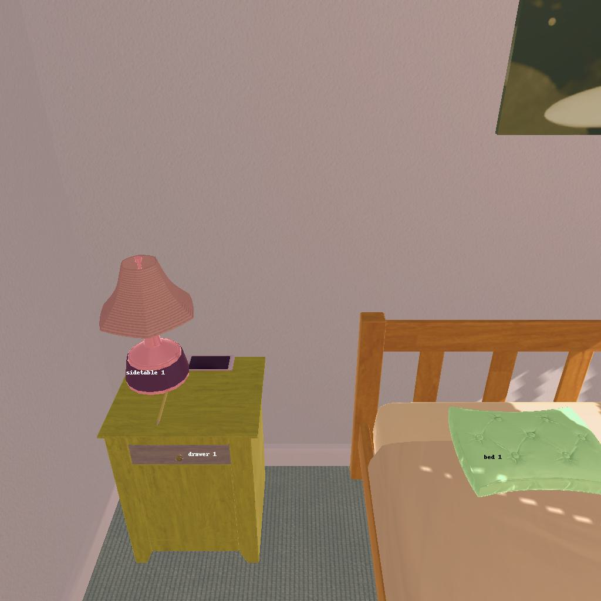

---------------------------------------------------------task: 0---------------------------------------------------------
--------------------------------------------------------------------------------------------------------------------------------------------------------------------
--------------------------------------------------------------------------------------------------------------------------------------------------------------------
Step:--------------------------------------------------------------------------0-------------------------------------------------------------------------------
----------------------------------------
VLM Prompt:
Image1:
**Instruction**
1. Analyze the provided image to identify all visible household objects, focusing on those relevant to the task description "examine the alarmclock with the desklamp."
2. Use the analysis of the image and the task hint "The agent must find an object of the desired type, locate and turn on a light source with the desired object in-hand." to answer the question: what is the most reasonable action in the choices for the task description "examine the alarmclock with the desklamp"?
4. Decide and write the answer using the template: The answer is: (i): , where i is the real number. If there is no desired object in the image, search every place based on **Initial Observation** to find the object. And if no one is exactly correct, choose a similar answer.
**Initial Observation**
You are in the middle of a room. Looking quickly around you, you can see bed (1), sidetable (1), drawer (1-11), dresser (1), safe (1), laundryhamper (1), garbagecan (1)
**Answer Choices**
(1): go to bed 1
(2): go to sidetable 1
(3): go to drawer 1
(4): go to dresser 1
(5): go to drawer 2
(6): go to drawer 3
(7): go to drawer 4
(8): go to drawer 5
(9): go to drawer 6
(10): go to drawer 7
(11): go to drawer 8
(12): go to drawer 9
(13): go to drawer 10
(14): go to drawer 11
(15): go to safe 1
(16): go to laundryhamper 1
(17): go to garbagecan 1
**Answer**
Let's think step by step by following the instructions.
----------------------------------------
----------------------------------------
Original Response:
The task is to "examine the alarmclock with the desklamp." To complete this task, the agent must find an alarm clock and a desklamp. The image shows a sidetable with a lamp labeled "sdtable 1" which seems to be the desklamp needed for the task since it is the only lamp visible. There is no clear alarm clock visible in the image. However, alarm clocks are often found on sidetables next to beds, suggesting that the alarm clock may be on or inside sidetable 1.
Based on the Initial Observation, there is a drawer labeled "drawer 1" in the sidetable. The alarm clock could be inside this drawer. Therefore, the most reasonable action would be to go to the sidetable to potentially find the alarm clock and use the desklamp to examine it.
The answer is: (2): go to sidetable 1
----------------------------------------
----------------------------------------
>>> Refine Original VLM Response and Get Pure Action: go to sidetable 1
----------------------------------------
-----------------------------------------------------------------
Running time: 7.812963962554932 seconds
Total Money: 0.017299999999999996
-----------------------------------------------------------------
-----------------------------------------------------------------
Text Observation:You arrive at loc 1. On the sidetable 1, you see a pillow 1, a desklamp 1, a cellphone 1, and a pencil 1.
-----------------------------------------------------------------
UNSUCCEED